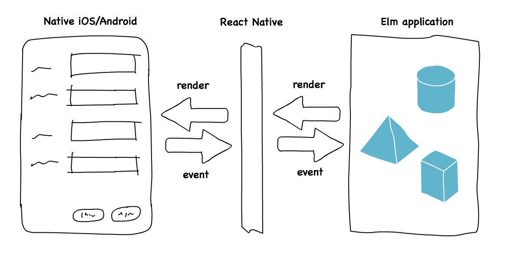

Elm Native UI
The future of Elm + React Native

Read this to
- get an inside look into how Elm Native UI has evolved
I expect you to know
- what React Native is
- some Elm
Elm Native UI aims to let people build mobile apps in Elm using React Native.
Elm Native UI logo by Paul Young
I wrote a post about Elm Native UI a month ago. Since then, a lot has happened with the project. I had a chat with Evan Czaplicki on how things really should work. Yusef and Noah helped move away from ports. I restructured the project to be less a proof-of-concept and more a library.
This post gives an overview of the major changes made, and paints a picture of how I see the future at this point.
What we had before
A month ago we had an intricate setup that was using ports for outputting the UI and getting events from React Native. It worked, but there were many annoyances with the approach. Among other things, we had to encode the view into a signal of JSON.
-- "main"
port viewTree : Signal Json.Encode.ValueYe olde JSON values. Meh.
This meant that no event handlers could actually be tied into the elements. We had a workaround for that, but suffice to say it was not pretty.
So shortly after I had published the blog post Evan Czaplicki messaged me saying he’d like to have a video call on Elm Native UI sometime and in short explained that what I’d done just seemed awfully complex and that there was definitely a better way.
From ports to main
A few days later, I had the video call with Evan. (He’s such a nice guy, by the way!) We chatted for about an hour on everything related to the project, but our main focus was the main. I described the reasons we had had to go with ports and not the normal Elm application way of letting main output the view.
Basically the thing is that main restricts the types that can pass through, because each allowed type needs to have specific support in the Elm runtime. Evan then went on to explain that supporting a new platform is something that can really get special help from the language. In fact, adding a new allowed type is actually very simple for him to do. He even showed me the parts of code I’d need to edit in order to make it work on my computer.
 My reaction to the things Evan said (courtesy of Giphy)
My reaction to the things Evan said (courtesy of Giphy)
While I was busy with work for a while, a helpful character by the name of Yusef Napora appeared. He single-handedly moved the project forward by a major leap simply because he was having fun!
I had failed to communicate the things I had discussed with Evan in the project readme so Yusef’s solution was based on making the compiler think the application is outputting Html. In reality it was using a monkey-patched virtual-dom package that could output the virtual tree for React Native to pick up. While an admirable feat of engineering and all in all a neat trick, this was not the correct way of doing things.
Hacking on @elmlang and #reactnative is so much fun! Made the “random gif” from the elm architecture work last nite pic.twitter.com/30C6aNAD34
— Yusef Napora (@sefnap) March 10, 2016
Meanwhile, I met Noah (a NoRedInk employee and an Elm contributor) while I was on a talking gig in Stockholm. I told him what me and Evan had talked in the video call, and that I hadn’t yet had the time to make the changes for the compiler and core necessary to make it happen. The next week he had took up on the challenge and created the base for our ideal future — first-class support for the React Native virtual tree at the language level.
Both of these things, the refactoring and new features Yusef had done, and the compiler modifications Noah made, eventually came together in the great PR to change the future of the project. After some discussion, I merged all of that stuff into master, effectively severing the continuity with older versions of Elm Native UI. From this moment on, the project would not compile with the official elm-compiler. On the other hand, the new version was on track with what Evan and I thought best, and the view functions were now aligned with how elm-html works.
From the proof-of-concept project to an installable package
Yesterday I decided I would completely rethink the project structure. From the beginning, the Elm Native UI repository had been a React Native project with all the files that go with such a thing. This made sense when the goal was simply to make some kind of a proof-of-concept work. With the recent advances, Elm Native UI was finally looking worth being a library rather than just something to tinker with.
As depicted in the earlier post, the grand picture of how Elm Native UI should work is the following: “the Elm application is the only thing a developer needs to work on. React Native works as a ‘backend’ of sorts, relaying messages to and from the native app side to the Elm side.”
 How Elm Native UI ought to work
To make this happen, I made some fundamental changes.
- Moved all relevant package files to
./src - Moved usage example files to
./examples - Removed the React Native generated
androidandiosdirectories altogether - Renamed a bunch of stuff to be more intuitive for the end user
In particular I renamed the module, and the outputted type, to NativeUi. This should make much more sense to people used to the way elm-html works:
-- using elm-html
main : Signal Html
-- and using elm-native-ui
main : Signal NativeUiI also forked and modified the compiler and core to match these changes, and uploaded a pre-built version of the modified compiler so that not all people need to build it themselves to use Elm Native UI.
The coolest part of all this is that using the self-publishing script by Noah, people can now actually use Elm Native UI as a normal Elm package! You can init a React Native project of your own, then install the packages and start working on a mobile app in Elm. All the steps needed to start your own Elm Native UI project are documented in detail in the Get it running section of the readme.
What’s left to do
Apart from getting the official compiler and core to support NativeUi, there are a few other things to sort out still. Navigation is still an open issue, and there are some unchecked things in the To do, among other things.
More than that though, I can’t really say if/when Elm Native UI could be published into package.elm-lang.org. Due to the volatile nature of React Native itself, the published package would be very difficult to keep up to date and as high quality as expected from anything in the Elm package catalogue. For now, I think the best we can do is to wait and see how React Native evolves. Maybe in six months or a year, things will be more stable.